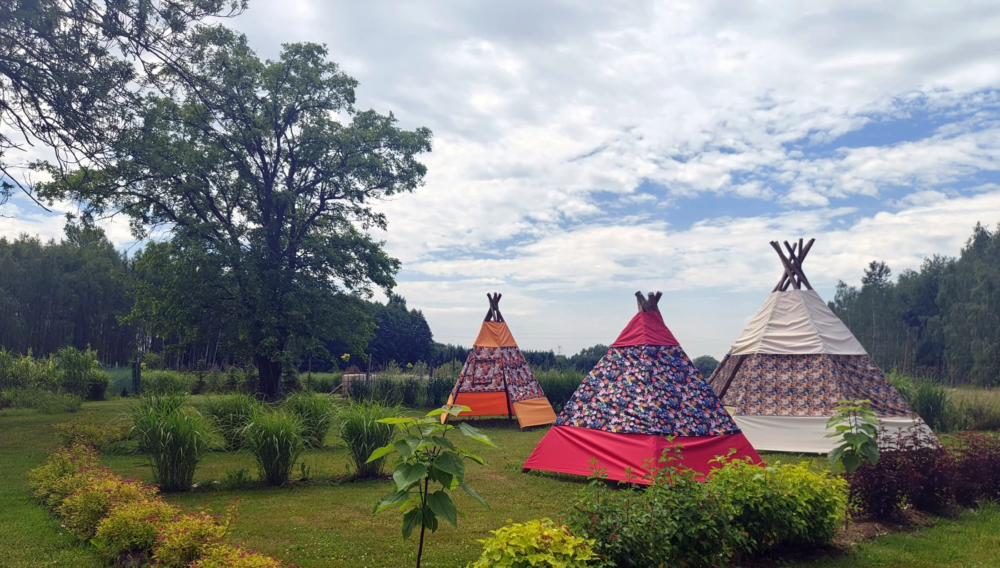
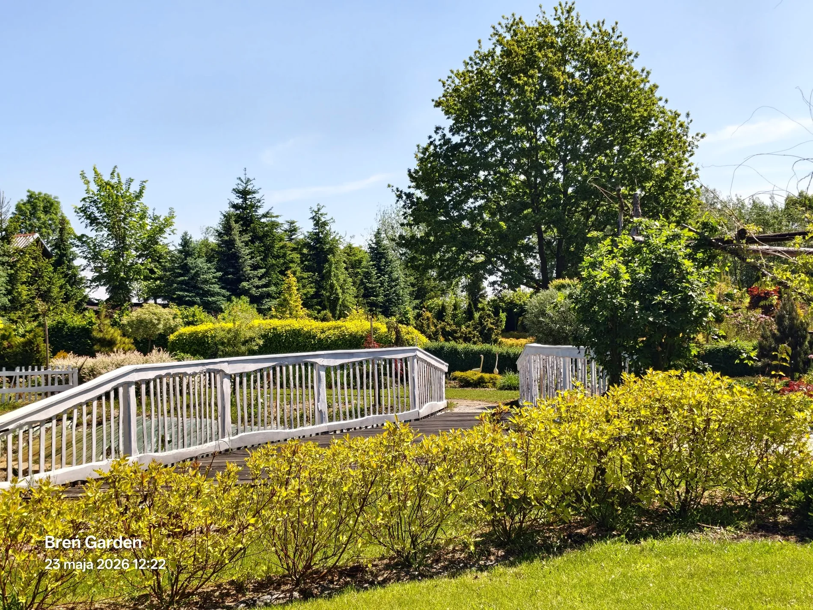
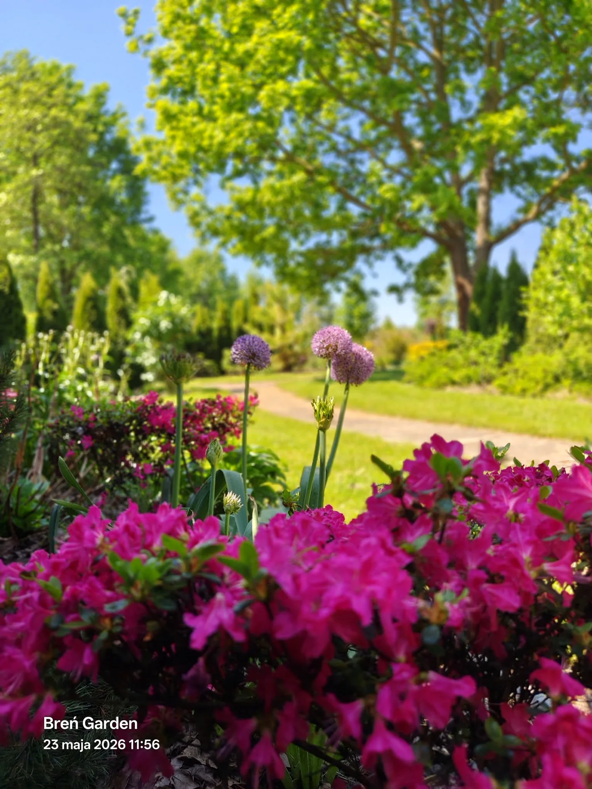

Sesje zdjęciowe
Rodzinne, komunijne, narzeczeńskie, ciążowe, dziecięce i produktowe. Ogród oferuje dziesiątki tła: kwiaty, drewniane mostki, zielone alejki, namioty tipi i trawy ozdobne. Każda pora dnia daje inne światło i inny nastrój.

Breń Osuchowski · gmina Czermin · Podkarpacie
Ogród plenerowy w Brniu Osuchowskim na sesje zdjęciowe, rodzinne spacery i kameralne spotkania. Zielone alejki, mostki, kwiaty, tipi i atrakcje dla dzieci tworzą spokojne miejsce z naturalnym charakterem.
O ogrodzie
Breń Garden to prywatny ogród plenerowy stworzony z pasji do roślin, natury i rodzinnych chwil. Alejki wyłożone drewnianymi pomostami wiją się między starannie dobranymi nasadzeniami — trawami ozdobnymi, różami, bylinami i krzewami kwitnącymi przez cały sezon.
Na terenie ogrodu znajdziecie białe mostki nad strumieniami, namioty tipi dla dzieci, strefę gokarów, linowy plac zabaw, ławeczki w zielonych zakątkach i ptactwo ozdobne, które można obserwować z bliska. To przestrzeń, która zachwyca zarówno fotografów, jak i rodziny szukające chwili wytchnienia.
Ogród położony jest w spokojnej wsi Breń Osuchowski w gminie Czermin, zaledwie 20 minut od Mielca. Z dala od ruchliwych dróg, w otoczeniu podkarpackiej przyrody.
Zobacz zdjęcia z ogrodu →

Co tu można robić
Breń Garden łączy plener fotograficzny, spokojny ogród i rodzinne atrakcje. Dzięki temu sprawdzi się zarówno na krótką wizytę, jak i na zaplanowaną sesję zdjęciową.
Rodzinne, komunijne, narzeczeńskie, ciążowe, dziecięce i produktowe. Ogród oferuje dziesiątki tła: kwiaty, drewniane mostki, zielone alejki, namioty tipi i trawy ozdobne. Każda pora dnia daje inne światło i inny nastrój.
Kameralne urodziny dla dzieci z tipi, małe przyjęcia rodzinne, pikniki na trawie. Ogród staje się scenografią dla chwil, które zostają na zdjęciach na zawsze — bez miejskiego hałasu i tłumów.
Rośliny ozdobne, trawy, krzewy i ptactwo można odkrywać ze specjalnym przewodnikiem QR — skanując tabliczkę przy każdym gatunku, dostaje się opis, ciekawostkę i nagranie lektora.
Dla najmłodszych gości ogród przygotował strefę aktywną: gokarty, linowy plac zabaw, zjeżdżalnie i huśtawki. Dzieci mogą spędzić tu kilka godzin — a rodzice spokojnie odpoczywają obok.
Na terenie ogrodu żyją ozdobne ptaki, które można obserwować z bliska. To wyjątkowa atrakcja dla dzieci i dorosłych — rzadka okazja do kontaktu z pięknem przyrody bez wyjazdu do zoo.
Od wiosny do jesieni ogród zmienia kolory — tulipany i azalie, potem letnie byliny i trawy, a jesienią płomienne barwy liści i traw. Każda wizyta wygląda inaczej. To ogród zaprojektowany na cały rok.
Galeria
Kliknij dowolne zdjęcie, by otworzyć w pełnym widoku.
Oferta
Trzy proste propozycje: spacer, sesja zdjęciowa albo małe wydarzenie w plenerze.
Wejście do ogrodu, swobodny spacer alejkami, plac zabaw dla dzieci, miejsca odpoczynku i opcjonalna trasa z przewodnikiem QR. Idealne na popołudnie dla całej rodziny.
Rezerwacja ogrodu lub wybranej jego części dla fotografa i rodziny, pary, grupy lub malucha. Spokojny czas na piękne kadry bez przypadkowych przechodniów w tle.
Kameralne urodziny dziecka, piknik rodzinny, spotkanie bliskich albo plenerowa niespodzianka. Ogród jako scenografia dla chwil, których nie zapomnisz.
Ceny i szczegółowe godziny otwarcia — zapytaj przez Facebooka lub telefonicznie.
Przewodnik QR
Przy każdej roślinie, przy każdym ciekawym zakątku i przy ptactwie ozdobnym stoi tabliczka z kodem QR. Wystarczy zeskanować telefonem — i dostaje się opis, ciekawostkę historyczną, wysokiej jakości zdjęcie oraz nagranie lektora AI.
Dzieci uczą się nazw roślin i zachowań zwierząt. Dorośli odkrywają, skąd pochodzi każda roślina i dlaczego trafiła właśnie tu. Spacer zamienia się w interaktywną wycieczkę przyrodniczą.
Zobacz przykładową kartę przewodnika →Kontakt i rezerwacje
Najprościej napisać do nas przez Facebooka lub zadzwonić. Odpowiemy na wszelkie pytania o terminy, zasady zwiedzania, możliwości rezerwacji i ceny. Zapraszamy przez cały sezon — od wiosny do jesieni.
Napisz na Facebooku →